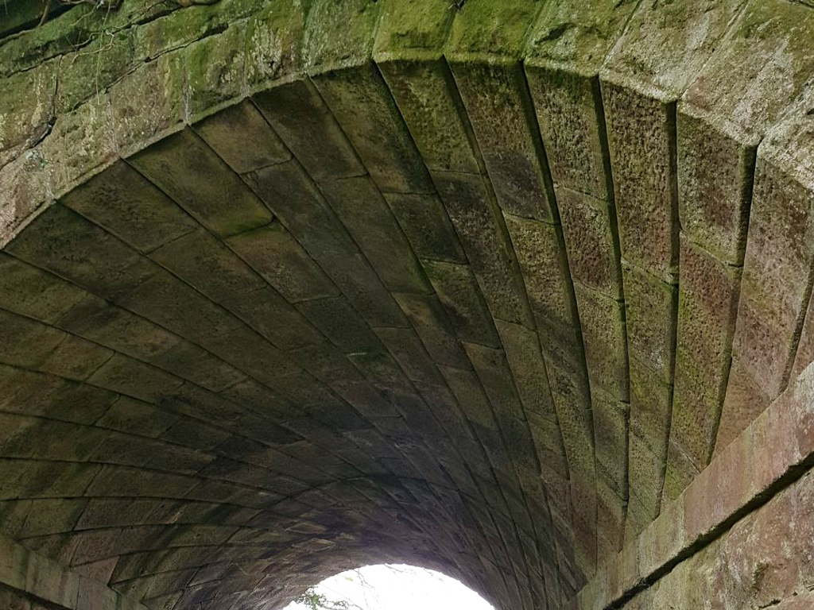
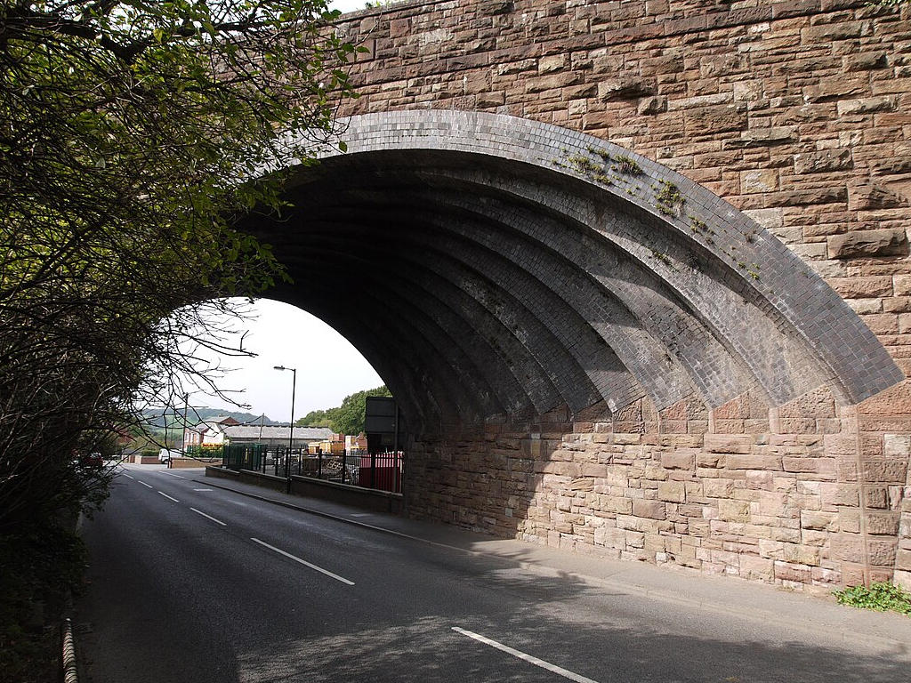
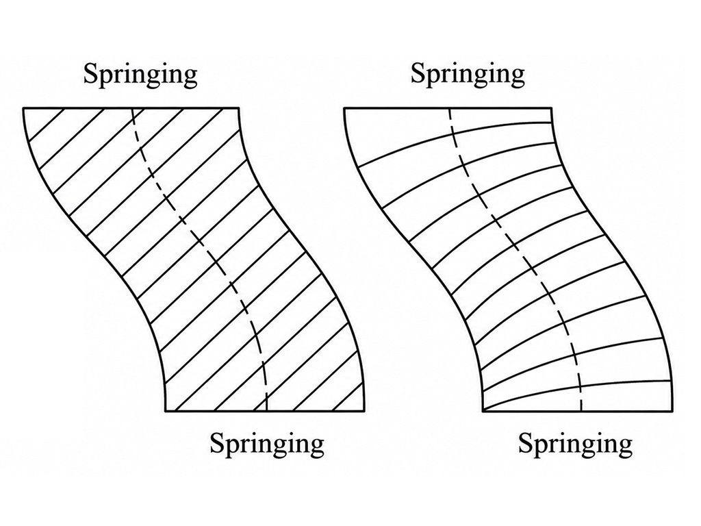
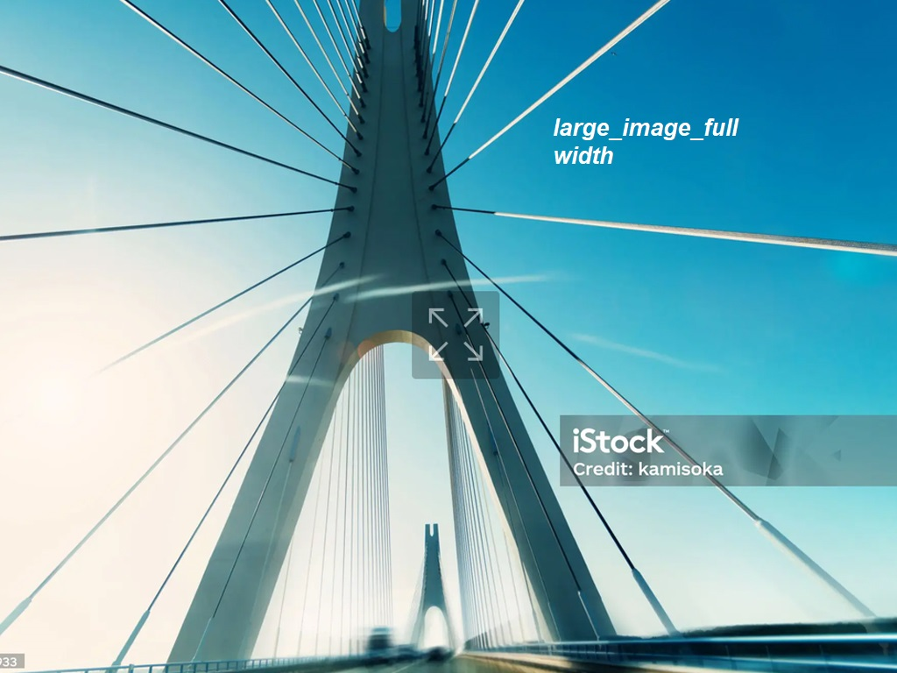
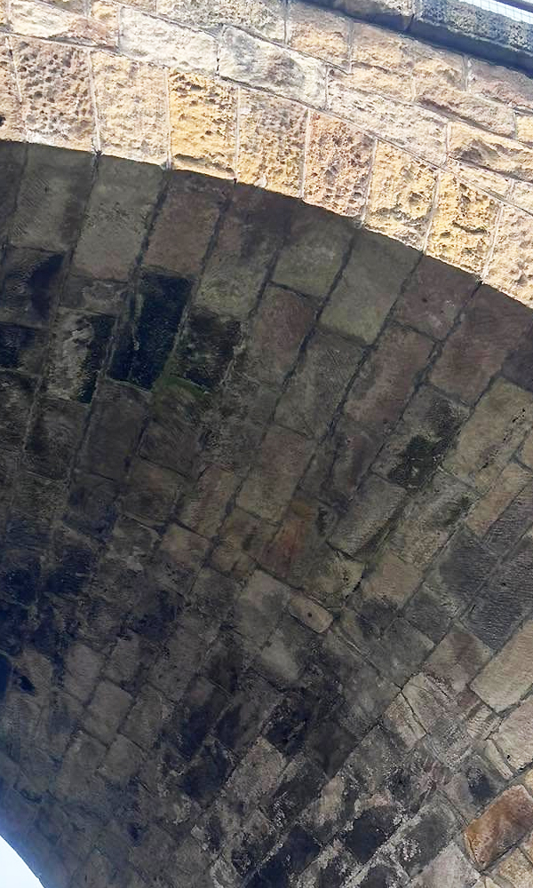
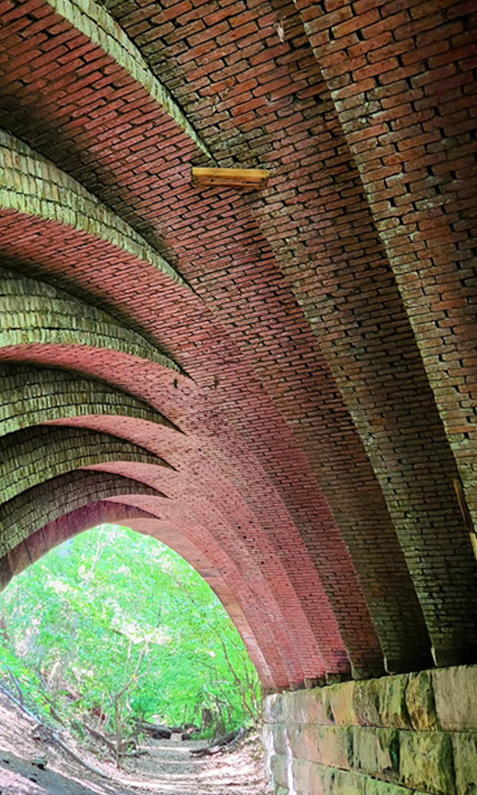

SKEW BRIDGES
Early efforts to build skewed masonry arch bridges were often unsuccessful and structurally unreliable.
Benjamin
Outram (1700s) constructed several bridges with skews of up to 20°, but these were built using
unskewed masonry, effectively treating the structure as though it were a square-span
bridge.
When a skewed arch is formed with unskewed masonry the acute-angled haunches on either side become structurally vulnerable.
The obtuse corner is the wide/open corner of the skew, and the acute corner is the narrow/sharp corner.

ORTHOGONAL VS HELICOIDAL
The Orthogonal method is generally unsuitable for skewed brickwork arch bridges because it relies on masonry units of varying sizes and requires a basket-handle geometry in which the arch barrel and abutments follow a continuous curve with vertical faces.
In a semi-circular arch, the first masonry course adjacent to the skewback can be laid parallel to the abutment and then curved perpendicular to the fascias with relative ease, with subsequent courses adjusted accordingly.
However, in segmental arches with higher span-to-rise ratios, the masonry near the abutments demands intricate shaping similar to that required in the Helicoidal method.

WHY THE HELICOIDAL METHOD DIFFERS
Furthermore, in the Orthogonal approach every voussoir is unique, leading to significant increases in cost and complexity.
The Helicoidal method, by contrast, is more economical because it allows the use of uniform voussoirs. However, it produces less visually appealing results in multi-ring skewed brickwork arches.
In this method, bedding joints are normal to the skew direction only at the crown; elsewhere, the brick courses diverge from being perpendicular to the fascias.

FE ANALYSIS
FE results show that the arch undergoes non-uniform radial deformation, meaning the intrados surface moves in and out by different amounts along its length when subjected to a live load.
A distinct zone of maximum outward displacement develops near the loaded region, shown by the red contours, while other areas move slightly inward, shown in blue.
This pattern is typical for masonry arches because the load does not act uniformly, causing the ring to distort locally as compressive thrust lines shift.


READING THE DEFORMATION
Examining these radial displacements is important, as they indicate where tensile cracking, ring separation or local overstressing is most likely to initiate.
Overall, the deformation pattern reflects how the arch redistributes internal forces to carry the applied load, and the magnitudes shown are consistent with expected behaviour for a well-confined, historic masonry arch under service-level loading.
MODE OF FAILURE
In Hodgsons analysis, the load/deflection behaviour of each skewed arch bridge varied significantly depending on the measurement location, reflecting the non-uniform stiffness across the width of the structures.
Several failure points were noted:
Extensive ring separation was observed. The wide haunch was consistently much stiffer than the narrow haunch. Cracks were typically located on the intrados and extrados near the eventual fracture.
Compressive crushing developed only after substantial rotation of individual blocks. This indicates that the fracture was not a simple hinge but instead involved relative block movement, implying a more complex failure mechanism.
MODELLING
As can be seen, the response of the arch was linear and proportional to the applied load, a behaviour consistent with that observed in traditional square masonry arches.
However, the distribution of strain in the transverse direction is immediately noticeable. This fan like strain is of particular importance.
This behaviour contrasts sharply with the more symmetric load paths and predictable thrust lines of non-skewed arches, illustrating why the development of simple two-dimensional modelling rules for skewed arches is challenging.

TAKEAWAY NOTES
The tight corner is the most vulnerable, and ring separation is a precursor to failure.
A skewed arch needs more fractures to form a hinge mechanism. These fractures tend to occur towards the abutments.
Normal square arches behave almost two dimensionally, which makes their behaviour easier to predict.
The way a masonry arch carries load depends on its shape and the load applied.
A bigger skew angle makes the behaviour more 3D and reduces structural capacity.
“A bigger skew angle makes the behaviour more 3D and reduces structural capacity.”
FURTHER DISCUSSION
Chandler and Chandler (1995) used shell theory to produce a very conservative lower-bound estimate of how much load a skewed arch can carry.
They argued that any stress pattern that keeps the arch in equilibrium, meets the boundary conditions and stays within material strength gives a valid minimum capacity.
This leads to the idea that, with good edge support, the arch could theoretically resist load using compression in the bedding joints alone.
However, this estimate is unrealistically low. It also depends on continuous support from the spandrel walls—if these detach, the simplified compression-only load path is no longer valid.
